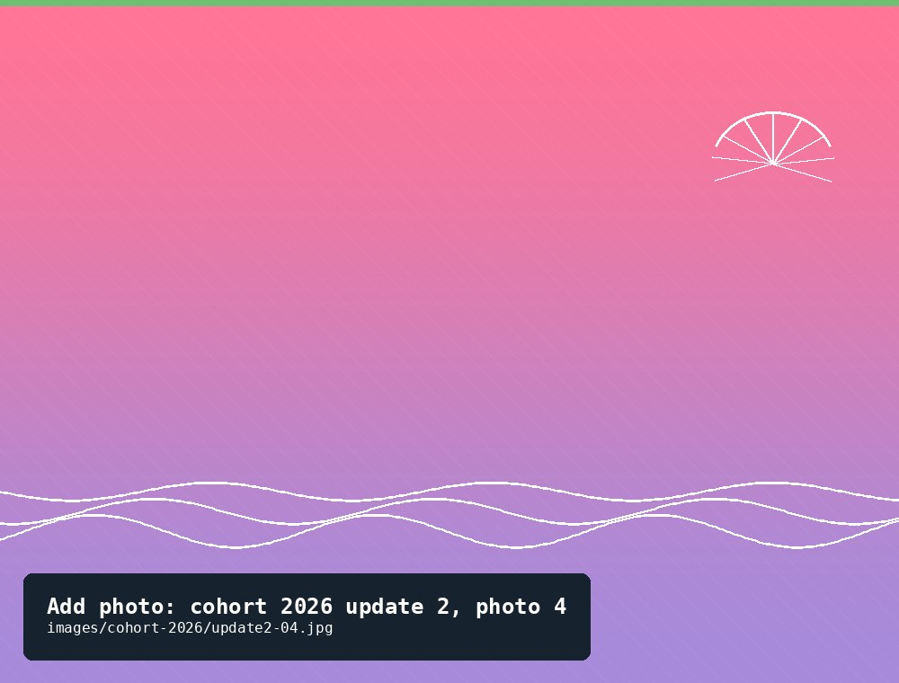

Cohort 2026
Started with 500 spat in April 2026 — the garden's newest and current cohort.
481Current count
24 mmLargest shell
2Updates logged
Started with 500 spat in April 2026 — the garden's newest and current cohort.
Update log
First check-in for the 2026 spat, about six weeks after they arrived. Still tiny — measuring the smallest ones took a steady hand and good light.
Minimal — the cage is still new and hasn't built up much growth yet.
Grass shrimp and a handful of mummichogs darting through the mesh.
Spat are small enough that we're handling them with a spoon rather than fingers during measurement.


A stormy stretch dropped the river's salinity noticeably, but growth is still tracking well. More detail on what we watched for in the latest blog post.
Some sponge growth and light algae film; barnacle set has been unusually low this year.
Mud crabs, and a juvenile flounder that had settled onto the cage floor.
Salinity dropped to 6 ppt after back-to-back storms — below our usual range, so we're checking the cage more often until it recovers.


